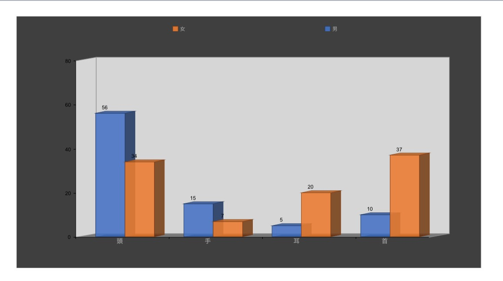

第四回 フィールドワーク ー結果ー
7班
観察日時：2,021年10月19日
14:30~15:50
観察場所:学校の出入り口➱美術館前の坂
変更
観察結果

男女の違いで見ると、頭にかぶっている人は男性の率が多く、
首に着けている人は女性の率が多かった
結果の考察
観察日は17℃と気温が低かったため、女性に比べ髪の毛の長さが短い男性は
頭が寒い買ったため帽子をかぶっていたひとが多かったのではないかということが考えられる。
年齢層
首元にネックレスをつけている男性は若者がほとんどであった。
男性は会社員（30～40代）が比較的多かったため、ピアスをつけている男性は少なく、
スーツを着て腕時計をしている人が多かった。
一方、女性はピアスをつけている人が多く、幅広い年齢層であった。
首元に着けているものに年齢が分かれていたように感じる。
50～70代 スカーフ
30～40代 マフラー、ネックレス
20代 ネックレス
このように分けることができた。
フィールドワークを通して
今回のフィールドワークでは3つ反省点があった。
1．観察場所
初めは学校の出入り口を観察場所にしていたが大人数を観察したかったため、
美術館前のほうが年齢層などいろいろな人がいた。
2．観察時間
観察時間をあらかじめ決めていなかったため、時間があいまいになってしまった。
何を目的にして、この時間帯なのかを決めておけばよかった。
3．観察日の気温
観察日の気温が低かったため、コートなどを羽織っている人が多く、
観察しづらかった。